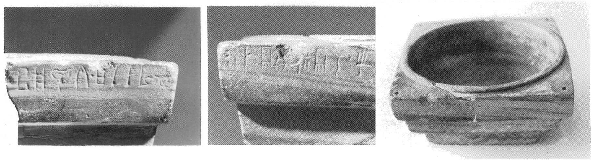
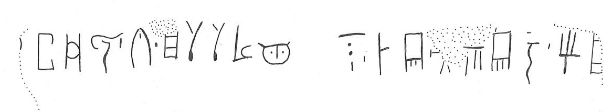

-
KNZa10
Names
Aliases for the inscription.
KNZa10, KN Za 10
Support
Type of Object.
Stone vessel
Location
Site where object was found.
Knossos
Findspot
Location at Site.
Unavailable


# "Row Index", "Line Index", "Word Index", "Syllabogram", "Status of Reading"
# R L W I S
# 1 0 1 PA certain
1 1 0 TA none
1 1 0 NU none
1 1 0 MU none
1 1 0 TI none
1 1 1 *900 none
1 1 2 JA none
1 1 2 SA none
1 1 2 SA none
1 1 2 RA none
1 1 2 MA none
1 2 3 NA none
1 2 4 *900 none
1 2 5 DA none
1 2 5 WA none
1 2 6 *900 none
1 2 7 DU none
1 2 7 WA none
1 2 7 TO none
1 2 8 *900 none
1 2 9 I none
1 2 9 JA none
Scribe
Writer of Inscription.
Unavailable
Context
Approximate Date of Inscription.
Late Minoan IA
1600-1500 BCE
Dimensions
Height x Length x Thickness.
Catalogue
Museum Reference Number.
Readings
Linear A Transcription
A Linear A transcription with words parsed separately.
Line breaks match the inscription.
𐘳𐘯𐘕𐘠𐄁𐘱𐘞𐘞𐘴𐙁𐘅𐄁𐘀𐘮𐄁𐘬𐘮𐘄𐄁𐘚𐘱
ASCII Transcription
An ASCII transcription with words parsed separately.
Line breaks match the inscription.
TANUMUTI*900JASASARAMANA*900DAWA*900DUWATO*900IJA
Linear A Tabulation
A Linear A transcription with words parsed separately.
Line breaks are logical, e.g. to represent a list.
𐘳𐘯𐘕𐘠𐄁𐘱𐘞𐘞𐘴𐙁
𐘅𐄁𐘀𐘮𐄁𐘬𐘮𐘄𐄁𐘚𐘱
ASCII Tabulation
An ASCII transcription with words parsed separately.
Line breaks are logical, e.g. to represent a list.
TANUMUTI*900JASASARAMA
NA*900DAWA*900DUWATO*900IJA
Commentaries
KN Za 10
(HM 2100)
(GORILA IV: 8-9), square Libation Table, limestone (House of the Frescoes,
room D, LM IA context); the preserved corner is "perforated"
(PM II 440), this implies that the hole is drilled all the way through
(but see IO Za 2)-- if all
corners were perforated, perhaps the table was suspended.
.a:
]-TA-NU-
MU
-TI •
JA-SA-SA-RA-MA-
.b: -NA • DA-WA-[•]-
DU
-WA-
TO
•
I-JA[
.a-.b: ]-TA-NU-
MU
-TI •
JA-SA-SA-RA-MA-NA • DA-WA-[•]-
DU
-WA-
TO
•
I-JA[; the last word may have been I-JA[-PA-QE (cf.
I-NA-JA-PA-QA, PK Za 11d).
Commentary © John Younger
References
papers/GORILA-Vol4.pdf#page=51